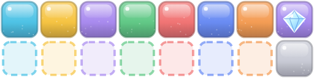

Concept: a falling-block puzzle game in the classic tradition. Gem-studded pieces, a charge-and-release Prism Burst and permanent upgrades turn each run into a short, juicy chase for one more record.
About 10% of pieces carry a gem mino. Cleared gems, plus a score bonus, become shards. Shards buy 6 permanent perks, 13 levels in total: Prism Lens (faster charge), Gem Magnet, Wide Beam (bigger Burst), Fever Fuel, Steady Hands (longer lock delay) and Second Wind (survive one top-out). Each perk changes how you play, not only your numbers.
Each line cleared is 1 XP. Player levels unlock 5 extra visual themes: Candy Shop, Sea Glass, Citrus Grove, Lavender Field and the animated Prism. The title screen always shows the next unlock and how many lines it needs, so every run moves you forward.
Personal bests for each mode, a daily seed with today's and all-time bests, and 15 achievements (Quadrant, Triple Axel, Clean Slate…). Each achievement pays shards, which feeds back into hook 1.
On the title screen, Play is pre-focused, so Enter starts a run. READY–SET takes 1.5 s. First-run hints teach move, drop, hold and Burst one at a time and disappear once used. The first run has a 25% gem chance, so shards arrive right away. Music adds layers as level and combo rise.
One style reference for every asset: a rounded "candy-paper" tile. It has a top-lit vertical gradient, a glossy upper band, a thin darker rim, a shine dot and faint paper speckle. Gems are faceted diamonds with white edges. Backgrounds are pale paper gradients with a dot grid and drifting translucent shapes. Fever adds a moving pastel rainbow wash. UI is light theme only: white cards, soft shadows, rounded corners and one theme-tinted accent colour. Morning Paper palette:

Juice: row-collapse flash, coloured debris, hard-drop streaks, screen shake (can be turned off), pop-in callouts, gems that home into the counter, a danger glow near the top, and a lock-delay brightening on the active piece.
About 25 SFX built from oscillators, filtered noise and envelopes. Line-clear chords rise one semitone per combo step. The original 4-bar music loop (D–A–Bm–G) is a step sequencer. It adds bass, drums and a lead as level, combo and Fever rise, and speeds up with level. No audio files and no audio plugin.
Arrows/Space/Z/X/C/V, plus a left-handed cluster (A/D/W/S, J/K/L, I, O) that is always active. Mouse: hover a column to aim, click to drop, right-click or wheel to rotate. A standard gamepad works too. DAS, ARR, soft-drop speed, ghost, shake and volumes are adjustable. The game auto-pauses when the window loses focus.